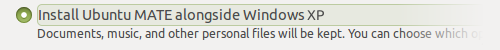
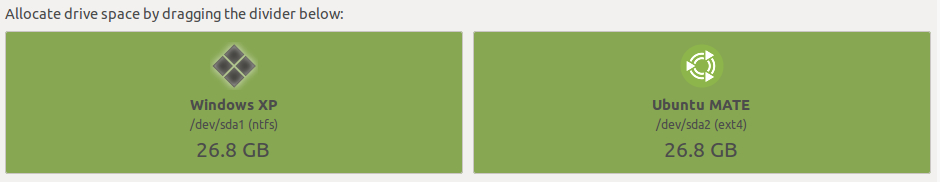
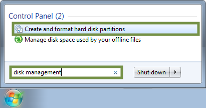
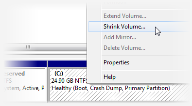
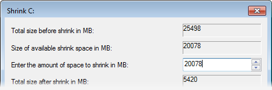
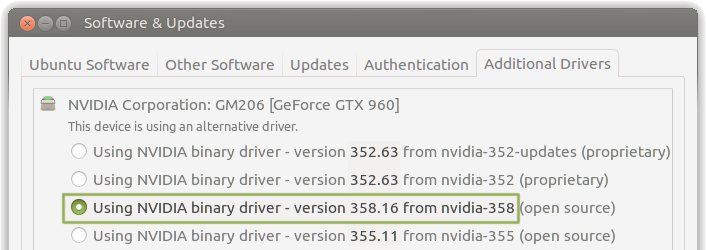

Topic Selection
Prerequisites
Installation
Utilities
Post-Installation
Familiarity
Troubleshooting
Modest System Requirements
Ubuntu MATE works well on both high-end to slow computers, optimized to be functional, while light on system resources.
Minimum
- Pentium M 1.0 gigahertz (GHz)
- 1 gigabyte (GB) of RAM
- 9 gigabytes (GB) of disk space
Recommended
- Core 2 Duo 1.6 gigahertz (GHz)
- 2 gigabytes (GB) of RAM
- 16 gigabytes (GB) of disk space
The operating system will run much more efficiently if your computer meets or surpasses the recommended requirements.
Preparing to Install
Ubuntu MATE is relatively simple to set up, whether you're looking to replace your existing operating system or install Ubuntu MATE alongside an existing one - such as Microsoft Windows or another GNU/Linux distribution.
For the best results:
- Back up any important data to another storage device.
- Connect to the Internet to install all available updates during installation.
- Stay connected to the Internet to install all available updates.
- Plug your device into a power source if it is running on battery power.
The live session you are currently in right now is a good opportunity to test Ubuntu MATE without modifying your computer, allowing you to test that all of your peripherals are working as intended before committing to installing it on your machine. Once you are ready, double click the installation icon on the desktop.
Modern UEFI-based computers
If you have a modern PC that uses the Unified Extended Firmware Interface (UEFI), you may need to disable Secure Boot (or enable the Unlock Bootloader option) in the BIOS prior to installation, particularly if an operating system was pre-installed.
If you are using a legacy BIOS machine, you do not need to do this.
Especially when dual booting, it is important that you boot your system in the correct mode and use the 64-bit image, as you cannot boot an operating system installed in BIOS mode after installing a UEFI-enabled operating system or vice versa.
Booting in BIOS mode on a UEFI system with a GPT-formatted disk will also show a "protection layer". Do not worry, your data is not lost or corrupt!
Swap
For computers that start to run low on memory (RAM), the operating system will start swapping content from memory to the hard disk. This is known as a "paging file" in Windows. Performance will decrease when running low on memory and could possibly freeze if you completely run out of memory without anywhere to swap.
By default, a swap partition is created based on the size of your RAM. For example, if you have 2 GiB of RAM, then 2 GiB of hard disk space will be reserved for swap at the end of the drive.
Swap space that's the size of your RAM is also required if you would like to hibernate the system (as known as suspending to disk).
Dual Booting
Should you wish to install Ubuntu MATE alongside your existing operating system, your partitions need to be shrunk. This results in sections of your hard disk being split between multiple operating systems.
To minimize the risk of data loss or failure, ensure that:
- There is enough free space. 10 GB minimum is recommended.
- Back up important data to another drive.
- Defragment the hard drive.
- Ensure Windows has been cleanly shut down (not hibernated).
Which approach would you prefer?
The simplest method is to use the installer.
The installer scans your disks for existing operating systems and provides a choice on what you'd like to do.
You will see an option similar to this:

Followed by:

Do not interrupt or power off the computer during a resize operation.
If you do, data loss or a partition table corruption could occur. Please double check your changes before proceeding.
The installer may show a spinner cursor for a long period of time, depending on the size of your disk.
When you next boot Windows, run
chkdsk /f from the command prompt to check the
file system for errors. Windows may schedule this automatically. This
ensures consistency for the NTFS file system.
Use GParted or the installer's "Custom" option.
GParted is available during the live session only. It is located under the System Administration menu. GParted provides complete flexibility over your partitions, primarily for power users who know how they'd like to layout their disks. This method makes changes to partitions prior to installation.
After completing operations to your disk, you can leave the remaining space unallocated, whereby the installer will detect this unused space to install Ubuntu MATE to.
Using the Installer's "Custom" option.
Instead or in addition to GParted, the Custom option during the installation wizard can also configure and resize your partitions as well as choose mount points. Dividing your disks can make it somewhat easier to re-install the operating system later if desired.
You can specify these mount points:
/- The base for Ubuntu MATE/boot- Bootloader and kernels/home- Your personal files and folders/tmp- Temporary files/usr- Contains most of the applications (binaries, documentation, libraries, etc)/var- Variable data (such as system logs)/srv- Data for System Services (typically used for server configurations)/opt- Additional software unmanaged by the package manager (such as Spotify)
Creating separate partitions for all above mount points is not necessary.
The commonly partitioned directories being /, /home
and /boot. These mount points can also be set across different
physical disks, for instance, if you'd like the OS / on an SSD,
but your personal files /home on a mechanical hard drive.
Shrink your system disk within Windows.
Applies to Windows Vista and later.
If you are using Windows XP or earlier, you will need to use the Simple or Advanced method to shrink your disk.
Newer versions of Windows provide a tool to shrink the NTFS volume from within Windows. This is a safer bet if it's essential that Windows still boots on your computer while experiencing Ubuntu MATE.
1. Open Disk Management from the start menu.
2. Right click your desired drive and choose Shrink Partition from the context menu.
3. Enter the amount to shrink your system partition by.
Remember, Ubuntu MATE needs at minimum 8 GB of disk space. 1 GB = 1000 MB
Further Reading
For further information on the best practices to modify partitions containing Windows, see the following online.
Repairing Boot Problems
Linux distributions use a boot loader known as grub,
which looks for and bootstraps the operating system. However, some operating
systems (such as Windows) do not integrate with existing
boot loaders and will overwrite them, with the potential to lose access
to Ubuntu MATE temporally.
Fortunately, you can use the Boot Repair tool to repair common problems caused by other operating systems.
Requires downloading a package.
Please connect to the Internet to download and use this utility.
Sorry, Welcome was unable to establish a connection.
Updates & Extras
An Internet connection is required to download and install updates.
Software Updater
Ubuntu MATE periodically will check to see if new software and security updates are available for your computer. If you have just installed Ubuntu MATE, you might want to do this now.
Software Updater can be found later in System Administration.
Additional Codecs
The codecs package include a complete, cross-platform solution to decode, encode, record, convert and stream audio and video. It also includes a MP3 audio decoder that permits the playback of MPEG 1 audio layer III (MP3).
 Applying Changes...
Applying Changes...
Blu-ray and DVD Playback Support
Installs libraries that enable Blu-ray and DVD playback in VLC.
After install DVDs will work but for Blu-ray you will need to
downloadhttp://www.labdv.com/aacs/KEYDB.cfg
and save it to~/.config/aacs/KEYDB.cfg.
Applying Changes...
Additional Screen Savers
Install over 200 screen savers for when your computer is idle for long periods of time. Screen savers were originally created to reduce burn-in for cathode ray tube (CRT) monitors displaying the same image for long periods of time.
Applying Changes...
Additional Themes
Install additional themes and icons, such as Numix and Arc, to expand the selection available so you can tweak the look and feel to your liking.
Applying Changes...
Additional Community Wallpapers
The Ubuntu MATE Community have contributed dozens of desktop wallpaper images over the years. Why not install them and find something that suits your tastes?
Applying Changes...
Drivers
While a wide range of hardware is compatible with Ubuntu MATE, there are some components and peripherals that require proprietary drivers to function properly. Installing the firmware package is often required to get some devices, typically Bluetooth and Wi-Fi, to work correctly.
An Internet connection is required to download and install drivers.
Additional Drivers can be found later in the Control Center.
Sorry, Welcome was unable to automatically identify the graphics vendor on this system.
Card/Chipset: Unknown
NVIDIA Graphics Card Detected.
NVIDIA may have drivers for your card that can boost performance for 3D applications and games as well as deliver improvements to power management.
Card/Chipset: Unknown
AMD Graphics Card Detected.
AMD's drivers are no longer supported on Ubuntu. The open source drivers you are currently using will deliver the most stable performance out of your card.
Card/Chipset: Unknown
You're already good to go.
Intel's drivers are open source and are maintained/updated in the kernel.
Card/Chipset: Unknown
VirtualBox Guest Additions
To accelerate graphics performance inside the virtual machine, please install Guest Additions.
Proprietary or Open Source Drivers?
Proprietary drivers come directly from the manufacturer. As they are not open source, Ubuntu developers are unable to review and improve their code, which means that you'll have to rely on the manufacturer for support.
In addition, proprietary drivers can significantly improve graphics performance and as a result, the entire system. Users may wish to install these drivers to:
- Run 3D applications and games.
- Use Compiz's window effects.
- Improve power management, particularly if the device experiences overheating problems under open source drivers.
- Improve support for high resolutions and multiple monitors.
- Fix blank screen issues.
Proprietary drivers are known as "binary blobs". Certain hardware may experience worse behavior, causing more issues then the open source drivers, such as:
- Failing to boot to the graphical desktop.
- Broken drivers after an upgrade.
- Severe graphical glitches.
- Problems with applications/games requiring hardware acceleration.
is the open source driver for your card.
What about the latest NVIDIA drivers?
Additional Drivers fetches the latest tested driver from the Ubuntu repositories. Advanced users and gamers who would like newer versions may wish to consider adding the , which packages up the latest NVIDIA drivers for Ubuntu. These packages are not as thoroughly tested.
To add the repository to the system, open a terminal and type the following:
sudo add-apt-repository ppa:graphics-drivers/ppa
sudo apt-get update
After the PPA is added, newer versions are presented to install in
If there were no additional drivers found for the hardware nor did it work after installing the firmware packages, you may need to research your device to find the appropriate driver.
Unfortunately, this is due to the fact the manufacturer for your hardware hasn't provided any source code for developers to freely use, or there is insufficient documentation to create drivers for your particular brand and model.
Some manufacturers may provide closed source drivers provided by themselves directly. If you require assistance, feel free to .
When you set up a printer in the utility (under System Administration), you will be presented with a list of drivers available to use, if applicable.
Some manufacturers may provide their own drivers and require you to download them from their website.
.
HP Linux Printing and Imaging System
Recommended if you have an HP printer as it provides full support for printing on most HP SFP (single function peripheral) inkjets and many LaserJets, and for scanning, sending faxes and for photo-card access on most HP MFP (multi-function peripheral) printers.
Solaar
A device manager for Logitech’s Unifying Receiver peripherals. This enables features like managing paired devices and reading battery status.

Razer Drivers for Linux
A community-driven driver and daemon that utilities the full functionality of many Razer peripherals ranging from keyboards, mice and mouse mats.
Polychromatic
A front-end for managing Razer devices, with support for application profiles, setting effects and enabling features of the keyboard. Requires Razer Drivers for Linux to be installed first.
Language Support
Your computer may require updates to your language and localization settings, or you may want to install additional language support.
Language Support can be found later in the Control Center.
Complex Input
Some regions of the world require complex inputs.
Backup, Firewall and User Management
Ubuntu MATE provides tools to backup your files, comes with a firewall pre-installed and supports multiple user accounts.
Backups
Nothing is more important then having a backup of your personal files, just in case something disastrous happens to your computer.
Deja-Dup comes pre-installed and supports backups to local devices as well as online cloud-based services.
Backups can be found later in the Control Center.

Network Shares
Need to access files and folders with multiple computers?
Samba is available to install, which integrates with the Caja File Manager, allowing you to seamless retrieve data stored on another computer.
Firewall
Firewalls prevent malicious connections entering and leaving your computer. By default, the firewall is disabled, .
Gufw provides a graphical frontend to ufw
(Uncomplicated Firewall). If security is important to you, there are
.
Firewall Configuration can be found later in the Control Center.
Users
Share your computer with others? Set up a separate user account for each user to protect the individual privacy of each user sharing the same computer.
You can also log in to a Guest Session if someone is using your computer as a one-off.
Users and Groups can be found later in the Control Center.
User Interface
Ubuntu MATE provides a unique tool to transform the user interface. It can be used to quickly setup the user interface to broadly reflect how other popular operating systems look and feel. The Redmond layout is similar to Microsoft Windows, while the Cupertino layout is similar to Apple Mac OS X.
MATE Tweak can be found later in the Control Center.
Control Center
The utilities mentioned above are all part of the extensive Control Center that Ubuntu MATE provides. You can configure just about every aspect of your computer from the Control Center.
Keyboard Shortcuts
Ubuntu MATE has many keyboard shortcuts that help make using your computer more efficient.
The Super key is your Windows key. For Mac keyboards, this is the ⌘ Command key.
Common application shortcuts
These shortcuts apply in most applications.
| Ctrl C | Copy the selected text/object |
| Ctrl X | Cut the selected text/object |
| Ctrl V | Paste/insert the selected text/object |
| Ctrl A | Select all text |
| Ctrl F | Find and replace words |
| Ctrl B | Make the selected text bold |
| Ctrl I | Make the selected text italic |
| Ctrl U | Underline the selected text |
| Ctrl N | Open a new document or window |
| Ctrl S | Save the current document |
| Ctrl O | Open another document |
| Ctrl P | Print the current document |
| Ctrl Z | Undo the last change you made |
| Ctrl Shift Z | Redo a change that you just undid |
| F11 | Toggle the current application between full-screen and windowed |
Desktop shortcuts
This section lists common keyboard shortcuts which you can use to operate parts of the desktop.
| Alt F1 | Open the Applications menu |
| Alt F2 | Run an application by typing its name in the box which appears |
| Prt Sc | Take a screenshot of the whole screen |
| Alt Prt Sc | Take a screenshot of the current window |
| Ctrl Alt Delete | Open the dialog box to shutdown, restart or suspend. |
| Ctrl Alt L | Lock your screen. |
| Ctrl Alt T | Open a terminal. |
| Alt S | Screen reader enable/disable. |
Window shortcuts
| Alt Tab |
Switch between currently-open windows.
|
| Ctrl Alt Tab |
Switch between currently-open windows in all Workspaces.
|
| Ctrl Alt Left | Switch to the previous workspace. |
| Ctrl Alt Right | Switch to the next workspace. |
| Ctrl Alt Shift Left | Move the current window to the previous workspace. |
| Ctrl Alt Shift Right | Move the current window to the next workspace. |
| Alt F4 | Closes window. |
| Alt F5 | Returns window to 'normal' or previous size. |
| Alt F7 | Moves the current window (can be moved with mouse or keyboard). |
| Alt F8 | Resizes current window (again, can be moved with mouse or keyboard). |
| Alt F9 | Minimizes current window. |
| Alt F10 | Maximizes current window. |
| Alt F12 | Pulldown Terminal. |
| Alt Space | Displays the window menu with options such as 'Always on Top' and 'Minimize' and 'Maximize' and above commands. |
| Ctrl Alt Numpad 7 | Place window in top left corner of screen. |
| Ctrl Alt Numpad 8 | Place window in top half of screen. |
| Ctrl Alt Numpad 9 | Place window in top right corner of screen. |
| Ctrl Alt Numpad 5 | Center/Maximize the window in the middle of the screen. |
| Ctrl Alt Numpad 1 | Place window in the bottom left corner of the screen. |
| Ctrl Alt Numpad 2 | Place window in the bottom half of the screen. |
| Ctrl Alt Numpad 3 | Place window in the bottom right corner of the screen. |
Mouse Shortcuts
| Alt | Moves the window. |
| Alt | Resizes the window (closest window edge). |
Compiz Effects Shortcuts
All of the shortcuts listed in this section require Compiz to be enabled.
| Ctrl Alt D | Toggles 'Show Desktop'. |
| A | Zoom out, show workspace switcher. |
| S | Enables the 'scale' effect, it shows all windows from the current workspace. |
| Shift S | Enables the 'scale' effect, it shows all windows from all workspaces. |
| N | Invert colors of the focused window. |
| M | Invert colors for the whole screen. |
| Zooms in on the screen. | |
| Select a region to zoom into, using a rectangle. | |
| Alt | Move focused window. |
| Alt | Resize focused window. |
| Alt | Show window menu. |
What's inside my computer?
Your machine is made up of various components that interact with one another. This information is useful when providing support to ensure hardware and software works on your machine.
System
| Distribution: | |
|---|---|
| Kernel: |
Processor
| Model: | |
|---|---|
| Speed: | |
| Architecture in use: |
Components
| Memory (RAM): | |
|---|---|
| Internet Access: | Connected Not Connected |
The following information is retrieved directly from the inxi command line program.
Gathering data...
Sorry, there was a problem gathering this information.
System Profiler and Benchmark
See more specific system information in a graphical window, including connected USBs, PCI devices and a simple CPU benchmark.
Disks
A pre-installed utility that allows basic configuration to your disks and partitions, including formatting, partitioning, mounting, viewing S.M.A.R.T data and writing images to SD cards/USB drives.
GParted
An advanced tool for viewing, creating, modifying and deleting partitions. It also has features to expand/shrink file systems and supports a wide range of formats.
Disk Usage Analyser
A graphical tool for exploring your file system or individual folders to determine how much space is being used.
System Monitor
Views currently running processes, resource usage, and the amount of space used and free for currently mounted file systems.

Psensor
Views and graphs the current temperature of components attached to the system. Including: Motherboard, CPU, GPU and hard disks.